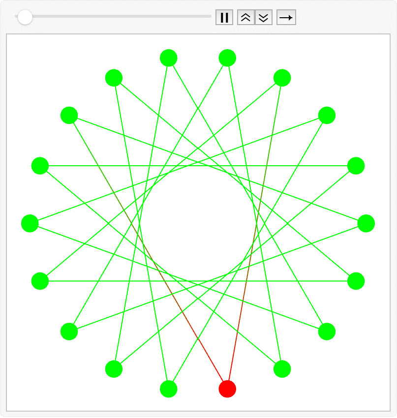

Reveal the Beauty of Primes Under the Ugly Mask of Chaos.
Visualization of a random walk on a star polygon with parameters p = 7, q = 18, and N = 100.
The duality of turbulence uncovers its hidden identity as a string theory with target space made of regular star polygons.